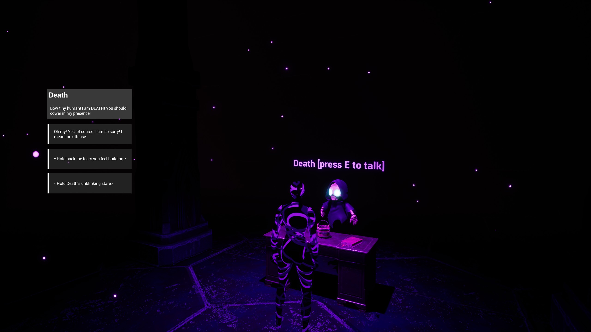
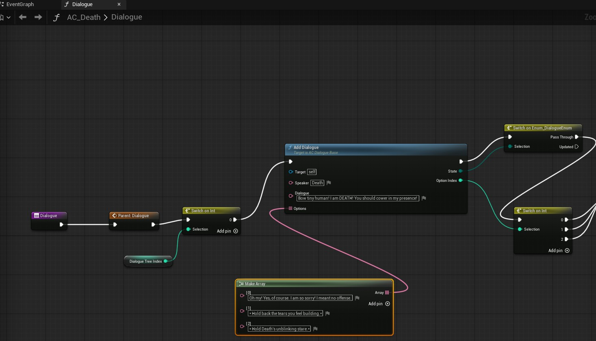
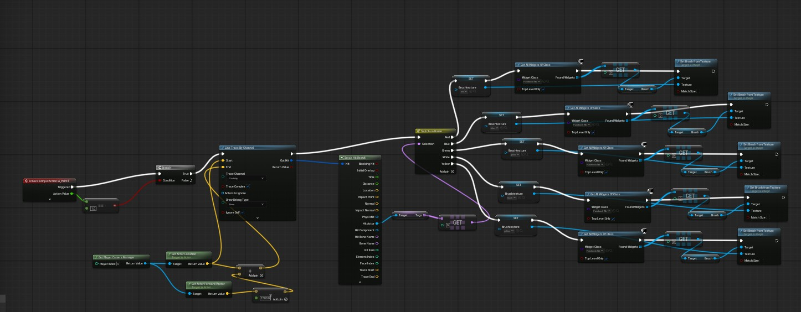
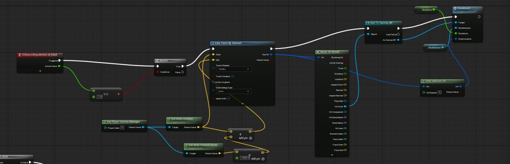

Gameplay Video
Itch.io Game Download
Buggin' Out Game
Game Overview
Overview
Buggin' Out is an Unreal Engine game that I created in two weeks for the Valentine's Day SkillUp Game jam. I unfortunately did not understand the exporting process and missed the deadline. But the majority of the game was built in two weeks. It is a casual rpg fitting the jam's theme of "death is not the end". The main character dies after a stressful work event and is reincarnated by death itself as a bug. Through island exploration and relaxing mini games the main character learns to enjoy life and relax. I used this game jam to learn Unreal Engine 3D and to start learning Blueprints. I only used free assets from the FAB store.
Credits
Nicolette Vere - Gameplay programmer, artist, video editor, designer of everything except the music.
Music written, played, and produced by Jonathan Hanson
Technical Information
Tech Stack
Unreal Engine 3D using Blueprints, Shotcut for video editing, and Adobe Fresco for opening video asset drawing.
Complex Systems Implemented Overview
Dialogue System
I needed a reusable system to easily make it so the main character could talk to NPCs. So I created a reusable dialogue system using Blueprints. NPCs could use dialogue functions to create individual dialogue tree options without needing to redo any base logic for displaying speaker dialogue, displaying options, and tracking conversation progression. I used this system for all NPCs in the game to quickly make dialogue trees for all characters.

For example, here is the Death NPCs dialogue tree. You can see it overrides the dialogue function which allows the rest of the dialogue related functions I created to be used in the tree. The function AddDialogue is another I created that is used for displaying a new set of speaker dialogue and response options in reusable Widgets.

Painting System
I wanted one of the mini games to be a creative game where a player could create a painting on an in game canvas and switch between multiple paint colors. To do this I created a painting system where a paint brush widget would be loaded in and right click was used to select paint can actors that updated texture for paint color. With a left click, a material with the selected color texture was rendered onto a canvas in game at the location the paint brush widget was pointing. This allowed for the user to select the paint can with the color they wanted to paint with and then point and paint on the canvas.

This is the blueprint code that updates the paintbrush "paint" color after a paint can is right clicked.

This is the blueprint code that allows for the user to left click while pointing at the canvas and have the paint material rendered onto the canvas.
